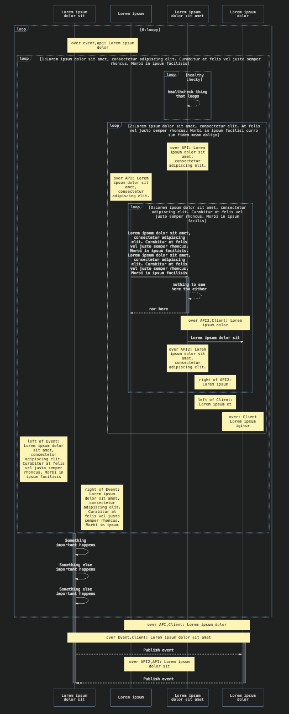
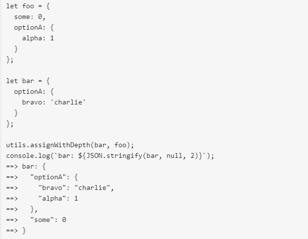
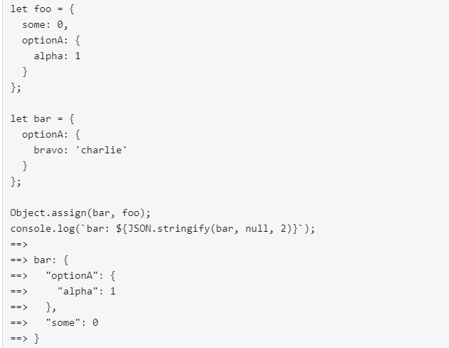

Version 8.6.0 Changes¶
CDN¶
With version 8.6.0 comes the release of directives for mermaid, a new system for modifying configurations, with the aim of establishing centralized, sane defaults and simple implementation.
directives allow for a single-use overwriting of config, as it has been discussed in Configurations.
This allows site Diagram Authors to instantiate temporary modifications to config through the use of Directives, which are parsed before rendering diagram definitions. This allows the Diagram Authors to alter the appearance of the diagrams.
A likely application for this is in the creation of diagrams/charts inside company/organizational webpages, that rely on mermaid for diagram and chart rendering.
the init directive is the main method of configuration for Site and Current Levels.
The three levels of are Configuration, Global, Site and Current.
Level of Configuration |
Description |
|---|---|
Global Configuration |
Default Mermaid Configurations |
Site Configuration |
Configurations made by site owner |
Current Configuration |
Configurations made by Implementors |
Limits to Modifying Configurations¶
secure Array
Parameter |
Description |
Type |
Required |
Values |
|---|---|---|---|---|
secure |
Array of parameters excluded from init directive |
Array |
Required |
Any parameters |
The modifiable parts of the Configuration are limited by the secure array, which is an array of immutable parameters, this array can be expanded by site owners.
Notes: secure arrays work like nesting dolls, with the Global Configurations’ secure array being the default and immutable list of immutable parameters, or the smallest doll, to which site owners may add to, but implementors may not modify it.
Secure Arrays¶
Site owners can add to the secure array using this command: mermaidAPI.initialize( { startOnLoad: true, secure: [‘parameter1’, ‘parameter2’] } );
default values for the secure array consists of: [‘secure’, ‘securityLevel’, ‘startOnLoad’, ‘maxTextSize’]. These default values are immutable.
Implementors can only modify configurations using directives, but cannot change the secure array.
Modifying Configurations and directives:¶
The Two types of directives: are init or initialize and wrap.
注解
All directives are enclosed in %%{ }%%
Older versions of mermaid will not parse directives because %% will comment out the directive. This makes the update backward compatible.
Init¶
init, or initialize: the init or initialize directive gives the user the ability to overwrite and change the values for configuration parameters, with respect to the secure array that is in effect.
Parameter |
Description |
Type |
Required |
Values |
|---|---|---|---|---|
init |
modifies configurations |
Directive |
Optional |
Any parameters not included in the secure array |
注解
init would be an argument-directive: %%{init: { **insert argument here**}}%%
The json object that is passed as {argument } must be valid, quoted json or it will be ignored. for example:
%%{init: {"theme": default, "logLevel": 1 }}%%
Configurations that are passed through init cannot change the parameters in secure arrays of higher levels. In the event of a conflict, mermaid will give priority to secure arrays and parse the request, without changing the values of the parameters in conflict.
When deployed within code, init is called before the graph/diagram description.
for example:
%%{init: {"theme": "default", "logLevel": 1 }}%%
graph LR
a-->b
b-->c
c-->d
d-->e
e-->f
f-->g
g-->
Wrap¶
Parameter |
Description |
Type |
Required |
Values |
|---|---|---|---|---|
wrap |
a callable text-wrap function |
Directive |
Optional |
%%{wrap}%% |
注解
Wrap is a function that is currently only deployable for sequence diagrams.
wrap respects manually added <br> so if the user wants to break up their text, they have full control over those breaks by adding their own <br> tags.
It is a non-argument directive and can be executed thusly:
%%{wrap}%% .
an example of text wrapping in a sequence diagram:

Resetting Configurations:¶
There are two more functions in the mermaidAPI that can be called by site owners: reset and globalReset.
reset: resets the configuration to whatever the last configuration was. This can be done to undo more recent changes to the last mermaidAPI.initialize({…}) configuration.
globalReset will reset both the current configuration AND the site configuration back to the global defaults.
Notes: both reset and globalReset are only available to site owners, as such implementors would have to edit their configs with init.
Additional Utils to mermaid¶
• memoize: simple caching for computationally expensive functions. It reduces the rendering time for computationally intensive diagrams by about 90%.
• assignWithDepth - this is an improvement on previous functions with config.js and Object.assign. The purpose of this function is to provide a sane mechanism for merging objects, similar to object.assign, but with depth.
Example of assignWithDepth:

Example of object.Assign:

• calculateTextDimensions, calculateTextWidth, and calculateTextHeight - for measuring text dimensions, width and height.
Notes:For more information on usage, parameters, and return info for these new functions take a look at the jsdocs for them in the utils package.
New API Requests Introduced in Version 8.6.0¶
setSiteConfig¶
Function |
Description |
Type |
Values |
Parameters |
Returns |
|---|---|---|---|---|---|
setSiteConfig |
Sets the siteConfig to desired values |
Put Request |
Any Values, except ones in secure array |
conf |
siteConfig |
注解
Sets the siteConfig. The siteConfig is a protected configuration for repeat use. Calls to reset() will reset the currentConfig to siteConfig. Calls to reset(configApi.defaultConfig) will reset siteConfig and currentConfig to the defaultConfig Note: currentConfig is set in this function Default value: At default, will mirror Global Config
getSiteConfig¶
Function |
Description |
Type |
Values |
|---|---|---|---|
setSiteConfig |
Returns the current siteConfig base configuration |
Get Request |
Returns Any Values in siteConfig |
注解
Returns any values in siteConfig.
setConfig¶
Function |
Description |
Type |
Values |
Parameters |
Returns |
|---|---|---|---|---|---|
setSiteConfig |
Sets the siteConfig to desired values |
Put Request |
Any Values, those in secure array |
conf |
currentConfig merged with the sanitized conf |
注解
Sets the currentConfig. The parameter conf is sanitized based on the siteConfig.secure keys. Any values found in conf with key found in siteConfig.secure will be replaced with the corresponding siteConfig value.
getConfig¶
Function |
Description |
Type |
Return Values |
|---|---|---|---|
getConfig |
Obtains the currentConfig |
Get Request |
Any Values from currentConfig |
注解
Returns any values in currentConfig.
sanitize¶
Function |
Description |
Type |
Values |
|---|---|---|---|
sanitize |
Sets the siteConfig to desired values. |
Put Request(?) |
None |
注解
modifies options in-place Ensures options parameter does not attempt to override siteConfig secure keys.
reset¶
Function |
Description |
Type |
Required |
Values |
Parameter |
|---|---|---|---|---|---|
reset |
Resets currentConfig to conf |
Put Request |
Required |
None |
conf |
conf¶
Parameter |
Description |
Type |
Required |
Values |
|---|---|---|---|---|
conf |
base set of values, which currentConfig coul be reset to. |
Dictionary |
Required |
Any Values, with respect to the secure Array |
注解
default: current siteConfig (optional, default getSiteConfig())